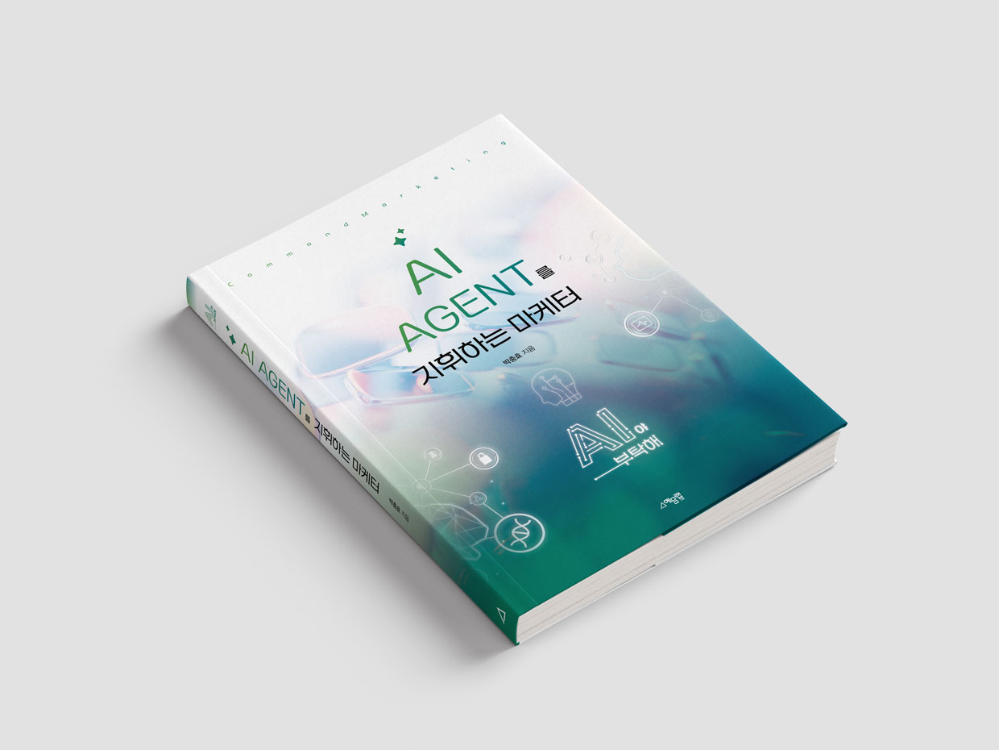
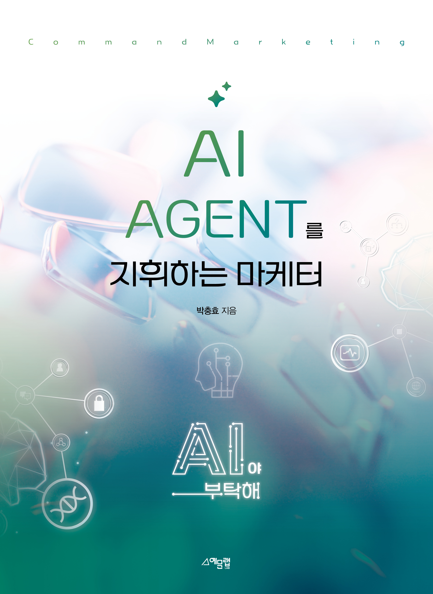

혼자 여러 역할을 맡고 있다면
반복 업무를 Agent에게 나누고, 마케터는 판단과 우선순위에 집중합니다.
내 상황 보기 →Command Marketing / New Book
AI에게 일을 맡기고, 마케터는 목표·검수·최종 판단을 책임지는 커맨드 마케팅 실무 가이드.
60-second diagnosis
도구 추천이나 점수 평가가 아닌 탐색 안내입니다. 개인정보를 입력할 필요가 없으며, 선택값은 앱 저장소에 저장하지 않습니다. 선택한 경로는 사이트 이용 통계에 포함될 수 있습니다.
Start here
책의 핵심을 세 가지 장면으로 먼저 확인하세요. 상황을 고르면 관련 내용과 실행 단계로 바로 이동합니다.
반복 업무를 Agent에게 나누고, 마케터는 판단과 우선순위에 집중합니다.
내 상황 보기 →Role·Goal·Context·Tool·Output·Review로 지시서와 검수 기준을 통일합니다.
R-G-C-T-O-R 보기 →3주 동안 일을 나누고, 기준을 만들고, 실패를 기록해 운영 루프를 완성합니다.
3주 훈련 보기 →From request to operation
One-minute preview
이 책은 프롬프트 모음이 아니라 일을 맡기고 검수하는 운영 구조를 설계합니다.
목표와 맥락을 정해 Agent에게 역할을 맡깁니다.
사실성·브랜드·고객·채널·리스크 기준으로 결과를 판단합니다.
실패와 승인 기록을 남겨 팀의 운영 매뉴얼로 만듭니다.
질문하는 마케터에서, 지휘하는 마케터로.
AI를 잘 쓴다는 것은 더 세련된 프롬프트를 외우는 일이 아닙니다.
무엇을 맡길지 결정하고, 필요한 맥락을 제공하며, 결과를 검수해 반복 가능한 업무 흐름으로 만드는 일입니다. 이 책은 도구가 바뀌어도 남는 마케팅 운영 체계를 다룹니다.
AI Maturity
역할별 Agent를 반복 업무에 배치하고, 사람은 목표와 검수 기준을 책임지는 단계로 이동합니다.
리서치, 콘텐츠, 리포트 등 역할별 Agent를 반복 업무에 배치합니다. 목표와 기준은 사람이 정하고, Agent가 실행을 보조합니다.
R-G-C-T-O-R은 Agent에게 일을 맡길 때 필요한 여섯 요소를 하나의 표준 구조로 묶습니다.
Agent가 맡을 역할과 책임 범위
업무의 목적과 성공 기준
타깃, 전략, 데이터, 제약 조건
사용할 문서, 데이터, 채널, 도구
결과물의 형식, 분량, 필수 항목
사실성, 브랜드, 리스크, 승인 기준
좋은 Agent는 능력이 많은 Agent가 아니라 역할과 경계가 분명한 Agent입니다. 여섯 요소에 승인 게이트를 더해 AI를 실제 업무 흐름 안에 안전하게 배치합니다.
R-G-C-T-O-R in one scene
각 카드를 열어 실제 업무 지시의 범위를 확인하세요. 책의 프레임을 적용한 웹사이트 편집 예시이며, 원문 발췌나 실제 캠페인 성과가 아닙니다.
퍼포먼스 마케터. 캠페인 초안과 검수할 근거를 준비하되, 광고 발행과 예산 집행은 사람이 승인합니다.
랜딩 페이지 조회와 핵심 구조 탐색을 늘립니다. 클릭 수만 보지 않고, 진단 시작·프레임 열람·구매 CTA 클릭을 구분해 확인합니다.
AI를 실무에 도입하려는 마케터·팀 리드가 대상입니다. 개인에게는 책과 훈련, 조직에는 교육·강연·컨설팅 경로를 안내합니다.
제공된 책 소개와 원고, 랜딩 페이지, 승인된 광고 소재, 캠페인 지표를 사용합니다. 확인할 수 없는 데이터는 만들지 않습니다.
4장 캐러셀·광고 문안·랜딩 개선 가설을 만듭니다. 각 결과물에 목표, 근거, CTA, 검수가 필요한 항목을 함께 적습니다.
과장 표현, 광고 메시지와 랜딩의 일치, CTA 명확성, 브랜드 톤을 점검합니다. 사실 검증과 최종 발행 승인은 사람이 맡습니다.
Your 90-second reading path
지금 필요한 파트의 소개와 결과물을 먼저 확인하세요. 각 경로를 둘러보는 데 약 90초입니다.
지시서 → 콘텐츠 운영 → 21일 훈련
거버넌스 → 업무 지시 → 운영 점검
리서치 → 제작·QA → 성과 개선 루프
Inside the Book
작동 원리와 안전 기준으로 시작해 리서치, 콘텐츠, 광고, CRM, 리포팅 Agent를 설계하고 운영 매뉴얼로 완성합니다.
Chat AI와 Agent AI의 차이부터 확률적 생성, Context Window, Memory, 멀티모달, 모델 선택까지. 일을 맡기기 전에 필요한 실무 감각을 세웁니다.
고객 데이터, 브랜드 보이스, 저작권과 광고 심의, Human-in-the-loop를 연결해 팀 단위 안전 기준을 만듭니다.
R-G-C-T-O-R 기본 공식, 업무 지시서, Workflow, 노코드 자동화를 연결해 인간이 지휘하고 Agent가 실행하는 구조를 설계합니다.
시장, 고객, 경쟁사를 읽고 페르소나와 구매 여정, 캠페인 전략으로 전환하는 다섯 Agent를 다룹니다.
기획, 카피, SEO, 랜딩페이지, 숏폼과 이미지와 영상, 콘텐츠 QA까지. 브랜드 톤을 지키며 빠르게 제작하는 방법을 연결합니다.
퍼포먼스 광고, 소재 분석, CRM과 이메일, 리포팅, 실험 관리, 마케팅 회의를 하나의 개선 루프로 묶습니다.
나만의 AI 마케팅 팀, 21일 훈련 플랜, 상황별 프롬프트 카드, 운영 점검표, QR 업데이트 라이브러리로 실행을 지속합니다.

“AI Agent는 마케터를 대체하지 않습니다. 마케터의 판단 이전의 일을 다른 구조로 바꿉니다.”AI AGENT를 지휘하는 마케터 / PARK CHUNGHYO
Read the system
320쪽의 실무 프레임과 3주 훈련 플랜으로 마케팅 업무를 Agent와 함께 운영하는 기준을 만듭니다.
AI를 한 번 잘 쓰는 방법보다 팀이 계속 잘 운영하는 기준이 필요한 사람을 위한 책입니다.
리서치부터 콘텐츠, 광고, 보고까지 반복 업무를 역할별 Agent로 나누고 싶은 분.
데이터, 검수, 승인, 기록의 원칙을 팀 운영 언어로 정리하려는 분.
노코드 도구를 붙이기 전에 목표, 입력, 결과, 검수, 승인 흐름을 설계하려는 분.
사실성, 브랜드, 고객 관점, 채널, 리스크를 점검해 발행 가능한 결과로 바꾸려는 분.
반복 업무를 Agent가 초안을 만들 일과 사람이 판단할 일로 구분합니다.
R-G-C-T-O-R로 지시를 표준화하고 사실, 브랜드, 고객, 채널, 리스크 기준을 배치합니다.
결과와 실패를 기록하고 승인, 수정, 재사용 흐름으로 팀의 매뉴얼을 개선합니다.
답은 종이나 개인 메모에 적어 보세요. 아래 체크는 이 화면에서만 사용하고, 입력·저장·전송하지 않습니다. 책의 훈련 방향을 바탕으로 만든 편집 미리보기입니다.
21일 훈련 전체 구조 보기 →2026년 10월 8일 기준 최종 내지 320쪽과 저자 공개 프로필을 바탕으로 답합니다.
AI를 단순한 도구가 아니라 역할별 Agent로 운영하는 방법을 다루는 320쪽 실무 가이드입니다. 목표 설정, 업무 지시, 결과 검수, 승인과 학습의 흐름을 Command Marketing 관점으로 설명합니다.
커맨드 마케터는 AI에게 판단을 넘기는 사람이 아니라, 사람과 Agent의 역할을 나누고 여러 업무 흐름을 설계, 검수, 개선하는 마케터입니다.
Role, Goal, Context, Tool, Output, Review의 여섯 요소로 AI Agent 업무 지시서를 표준화하는 구조입니다.
혼자 여러 역할을 맡은 마케터, 팀의 AI 사용 기준을 만드는 리더, 자동화를 업무 시스템으로 설계하려는 실무자, AI 결과물의 최종 책임을 지는 담당자에게 적합합니다.
AI Agent 리터러시와 거버넌스부터 리서치와 전략, 콘텐츠와 크리에이티브, 광고와 CRM, 성과 관리, 반복 가능한 운영 매뉴얼까지 7개 파트로 구성되어 있으며 21일 훈련 플랜을 포함합니다.
사람은 목표, 판단 기준, 승인과 최종 책임을 맡고 AI Agent는 리서치, 초안, 반복 실행을 지원합니다. 책은 이 역할 분담을 팀의 운영 방식으로 만드는 방법을 설명합니다.
반복 업무 하나를 골라 입력 데이터, Agent의 초안 범위, 검수 기준, 승인 담당자를 먼저 정합니다. R-G-C-T-O-R 지시서를 공유한 뒤 결과와 수정 이유를 기록하는 작은 흐름부터 시작하세요.
소속과 담당 역할, 개선하려는 업무, 참여 대상, 희망 일정을 알려 주세요. 고객 개인정보나 비공개 원본 데이터를 보내지 않아도 첫 적용 범위를 논의할 수 있습니다. 구체적인 구성과 비용은 협의 후 결정합니다.
Book notes / SEO · GEO · AIEO
PDF 근거를 명시한 책 소개 시리즈 3편과 공개 출처 기반 SEO·GEO·AIEO 가이드 5편입니다. 도서 요약과 편집 응용의 범위를 구분했습니다.

책 소개 · Agent와 거버넌스 / 2026-10-14
AI 에이전트 마케팅 책 『AI Agent를 지휘하는 마케터』의 Prologue와 Part 1·2를 요약합니다. Chat AI와 Agent AI의 차이, 데이터 보호, 사람의 검수·승인·책임 기준을 도서 페이지 근거와 함께 확인하세요.
글 읽기 →
책 소개 · 업무 지시서와 콘텐츠 / 2026-10-14
R-G-C-T-O-R 업무 지시서의 여섯 요소를 『AI Agent를 지휘하는 마케터』 Part 3·5에 근거해 소개합니다. 프롬프트를 업무 흐름으로 확장하고 콘텐츠·SEO·랜딩페이지의 검수와 사람 승인 기준을 세우는 편집 응용 예시를 확인하세요.
글 읽기 →
책 소개 · 21일 훈련과 운영 / 2026-10-14
AI 마케팅 21일 훈련을 다룬 『AI Agent를 지휘하는 마케터』 Part 6·7의 핵심을 요약합니다. 광고·CRM·분석의 운영 루프, 주차별 실습, 실험 기록과 사람의 승인 기준을 확인해 업무에 적용할 출발점을 찾을 수 있습니다.
글 읽기 →
SEO · GEO · AIEO / 2026-10-14
SEO·GEO·AIEO 차이를 정의와 적용 범위로 비교하고, Google의 AI 검색 안내에 비춰 SEO 기본기와 생성형 검색 대응을 정리합니다. 발행 전 체크리스트와 도서 프레임의 편집 응용 예를 확인하세요.
글 읽기 →
GEO · 콘텐츠 설계 / 2026-10-14
GEO 콘텐츠 작성법을 찾는 마케터와 팀 리더를 위해 질문에 먼저 답하는 본문, 범위·기준일·원출처 표기, 구조화 데이터와 FAQ의 한계를 정리했습니다. 한국어 예시와 게시 전 점검표로 실무 적용 방법을 확인하세요.
글 읽기 →
SEO · 기술 구현 / 2026-10-14
AI 검색 기술 SEO 체크리스트로 초기 HTML과 canonical·sitemap·robots.txt를 점검하세요. 구조화 데이터와 검색용·학습용 AI 크롤러 설정을 구분하는 마케터·개발팀용 배포 전 기준을 제공합니다.
글 읽기 →
AIEO · Agent 운영 / 2026-10-14
AI 콘텐츠 자동화 워크플로를 R-G-C-T-O-R로 설계해 역할·근거·출력·검수 범위를 정하는 방법을 소개합니다. 출처 대조, 개인정보 보호, 사람의 최종 승인까지 실무 체크리스트로 확인하세요.
글 읽기 →
SEO · GEO · 성과 측정 / 2026-10-14
GEO 성과 측정에서 검색 노출, 사이트 클릭·세션, AI 답변 인용, CRM 전환을 구분합니다. Search Console의 한계와 고정 질문 표본, 2주 단일변수 실험을 활용해 마케팅 성과를 해석하는 기준을 확인하세요.
글 읽기 →Choose your next move
내 업무를 나누고 지시서와 검수 기준을 직접 만들어 보고 싶다면, 책 구성과 훈련부터 확인하세요.
책 구성 먼저 보기 →구성원의 AI 사용 방식과 검수·승인 절차를 맞추고 싶다면, 팀에 적용할 범위를 먼저 확인하세요.
교육·강연·컨설팅 적용 범위 보기 →For your team / TROE
다음은 문의 시 함께 논의할 수 있는 적용 범위입니다. 실제 구성·일정·비용은 조직의 상황을 확인한 뒤 협의합니다.
사용 가능한 데이터, 브랜드 보이스, 사실 검증과 최종 승인 책임을 팀의 공통 언어로 정리합니다.
리서치·초안·검수·수정·승인을 나누고 R-G-C-T-O-R 업무 지시서로 연결합니다.
광고와 랜딩의 메시지 일치, 고객 맥락, 성과 해석과 실험 기록의 개선 지점을 찾습니다.
도구 사용법에 머물지 않고 실제 업무 분해와 검수 기준을 만들어 보는 교육 방향을 논의합니다.
마케터가 목표와 기준을 정하고, Agent가 반복 작업을 수행하며, 사람이 최종 결정을 내리는 구조를 설계할 시간입니다.
